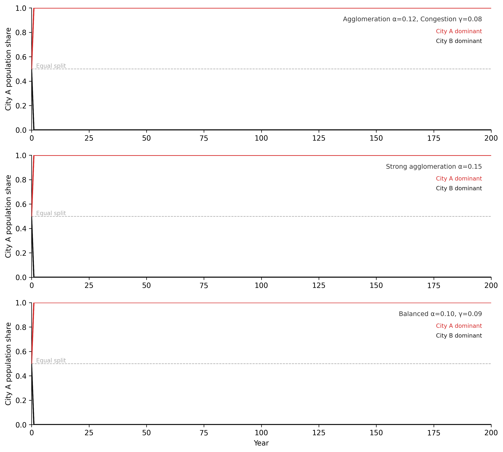

Agglomeration, lock-in, and why success breeds success
6.1 The puzzle
Every country, regardless of its geography, political history, or level of development, produces the same pattern in its city sizes. The largest city is roughly twice the population of the second-largest. The second is roughly twice the third. The relationship between a city’s rank and its size follows a power law: population is proportional to rank raised to an exponent close to −1. This regularity was formalised by Zipf (1949) and bears his name. It has held in every dataset examined since.
Canada: Toronto at approximately 6 million, Montreal at 4.2 million, Vancouver at 2.6 million, Calgary at 1.6 million (Statistics Canada 2021). The ratios are not exact. The pattern is. Japan produces the same distribution. So does Brazil, the United States, and France. The specific cities are different. The structural pattern is identical. No central planner produced it. No natural constraint imposed it. It emerged independently in thousands of cities competing for the same pool of migrants, capital, and economic activity.
The puzzle is not that large cities exist. The puzzle is why the distribution takes this specific mathematical form, why it is stable across centuries of urbanisation, and why it appears in places with no common institutional history. The usual economic explanations — comparative advantage, transportation costs, natural resources — are partial. They explain why some cities are larger than others. They do not explain why the ratio between them follows the same power law in Osaka and São Paulo.
The explanation lies in feedback structure. A city that is already larger offers more economic opportunity than a smaller city. That advantage attracts workers and firms. Their arrival makes the city larger. Making it larger makes it more attractive still. The reinforcing loop operates simultaneously in every city in every country. The Zipf distribution is what emerges from this process. Cities are stocks. Migration is a flow. Agglomeration is a feedback. The rank-size distribution is what emerges when reinforcing feedback operates simultaneously in thousands of cities competing for the same population.
6.2 Cities as stock-flow systems
A city is a collection of coupled stocks. Population, housing, economic output, and infrastructure each accumulate and drain through their own flows. Each stock has its own characteristic response time.
Population is filled by in-migration and natural increase, drained by out-migration and natural decrease. The net migration flow responds to the wage differential between cities and the cost-of-living differential — workers move when the expected gain exceeds the expected cost of moving. This response operates on timescales of months to a few years. Housing is filled by new construction and drained by demolition and conversion. The construction flow responds to rent levels and vacancy rates, but with a delay: planning approval, financing, and physical construction take two to five years from the decision to build. Infrastructure — roads, transit, water systems, power grids — accumulates through public investment and drains through depreciation. Its response time is measured in decades. A city’s traffic conditions today reflect infrastructure decisions made thirty years ago.
The mismatched response times produce characteristic pathologies. A city experiencing rapid population inflow fills its population stock faster than its housing stock can adjust. Rents rise. The rising rent signal eventually triggers a construction response, but the two-to-five year construction lag means the signal arrives into a market that may have already changed. Overbuilding follows a boom; underbuilding persists through a shortage. This oscillation pattern — driven by the response delay between a fast stock and a slower capacity stock — is the same structure as the commodity cycle in Chapter 2.
Fort McMurray is the extreme case. The city exists almost entirely as a function of one industrial stock-flow system: oil sands extraction. In-migration tracked the oil price cycle because wages tracked oil revenues and labour demand tracked production throughput. Workers arrived when oil was above roughly $60 per barrel. They left when it was not. The 2016 Horse River Fire made the mechanism visible in accelerated form. The fire simultaneously depleted the city’s population stock and its housing stock — both flows running hard in reverse within days. Population drained through emergency evacuation. Housing drained through physical destruction. Recovery required both stocks to refill simultaneously, with the housing stock constrained by construction capacity and the population stock constrained by housing availability. A city with more diverse economic structure — more decoupled stocks — would have shown more resilience. Fort McMurray’s stock-flow structure has almost no decoupling.
Earth domain: Urban heat island as a reinforcing stock-flow feedback
Dense impervious surfaces — roads, buildings, parking structures — absorb more incoming solar radiation than the vegetated land they replace. They re-radiate heat at night rather than cooling through evapotranspiration. City cores run 2–5°C warmer than surrounding rural areas as a result. This temperature differential is not fixed. It is a feedback. Higher urban temperatures increase air conditioning demand. Air conditioning systems expel waste heat into the outdoor environment. That waste heat adds to the urban thermal stock. The loop is reinforcing: more impervious surface → higher temperatures → more mechanical cooling → more waste heat → higher temperatures. MODIS land surface temperature products at 1 km resolution make the heat island signal visible in every major city on Earth. The signal scales with city size.
Data domain: Earth observation pipeline as city analogue
Raw satellite telemetry arrives at ground stations at rates exceeding 2.5 petabytes per day — the data ingest flow. Processed geophysical products — calibrated, geolocated, atmospherically corrected — form the usable data stock downstream. Processing capacity is the analogue of housing stock: it is built slowly, through instrument characterisation campaigns, algorithm validation, and infrastructure procurement. When ingest rate exceeds processing capacity, a backlog accumulates. Latency between event and usable product grows. This is the same structural pattern as urban congestion: a fast inflow against a slow-building capacity stock. The remedy — more processing capacity — faces the same response delay that faces urban housing supply. Capital allocation, procurement, and deployment take years. The backlog accumulates in the meantime.
The stock-flow structure of a city and the stock-flow structure of an Earth observation pipeline are not analogous in a loose metaphorical sense. They are the same structure operating in different materials.
Diagram 5.1 shows the three primary coupled stocks of a city — population, housing, and economic output — with their flows and the cross-stock feedback connections that produce housing cycles and wage-driven migration.
flowchart LR
MP(["Migration Pool"])
CI(["Construction Industry"])
INV(["Investment"])
DC(["Destination Cities"])
RS(["Removed Stock"])
DC2(["Depreciated Capital"])
CP[["City Population"]]
HS[["Housing Stock"]]
EO[["Economic Output"]]
MP -->|"in-migration"| CP
CP -->|"out-migration"| DC
CI -->|"new construction"| HS
HS -->|"demolition +\ndepreciation"| RS
INV -->|"capital inflow"| EO
EO -->|"depreciation"| DC2
CP -->|"labour supply"| EO
EO -->|"wages +\namenities"| CP
HS -->|"housing cost"| CP
style CP fill:#fff3f3,stroke:#d52a2a,stroke-width:2px
style HS fill:#f5f5f5,stroke:#111111,stroke-width:2px
style EO fill:#f5f5f5,stroke:#111111,stroke-width:2px
style MP fill:#f5f5f5,stroke:#111111,stroke-width:2px
style CI fill:#f5f5f5,stroke:#111111,stroke-width:2px
style INV fill:#f5f5f5,stroke:#111111,stroke-width:2px
style DC fill:#f5f5f5,stroke:#111111,stroke-width:2px
style RS fill:#f5f5f5,stroke:#111111,stroke-width:2px
style DC2 fill:#f5f5f5,stroke:#111111,stroke-width:2px
Figure 5.1. City as a coupled stock-flow system. Three primary stocks — population, housing, and economic output — are connected by flows with different response timescales. Population responds to wage and cost signals on years timescales; housing responds to population pressure with a 2–5 year construction delay; economic output responds to labour supply and investment. The delays between stocks produce the boom-bust cycles characteristic of urban housing markets.
Equilibrium city size and linear stability
The agglomeration-congestion two-loop system has an equilibrium city size where attractiveness equals zero — the wage premium exactly offsets the cost-of-living penalty. Whether cities actually reach this equilibrium, and whether it is stable, depends on the relative rates of the two feedbacks. This is a fixed-point analysis: the equilibrium satisfies w(P) - c(P) = 0, and its stability depends on whether the derivative of net attractiveness with respect to population is negative (stable) or positive (unstable).
A larger city is a more productive city. This is not a claim about scale economies within individual firms. A single factory operating in Calgary does not produce more output per worker than the same factory operating in Red Deer because Calgary is larger. The claim is about what happens when many firms and workers concentrate in the same place. Three mechanisms drive the effect. All three are reinforcing loops.
1. Labour market pooling. A larger city contains more workers with more diverse and specialised skills. A firm with an unusual technical requirement — a methane sensor calibration engineer for an emissions monitoring startup, a Cree-language court interpreter for a northern legal aid clinic — has a higher probability of finding that person in Calgary than in Red Deer. The probability is higher not because individual workers are better but because the labour pool is larger and more differentiated. Workers benefit symmetrically: a specialised worker in a thick labour market has more outside options, which reduces unemployment risk and increases bargaining power. The feedback is direct. A thicker labour market attracts more firms. More firms attract more workers. The market grows thicker.
2. Knowledge spillovers. Ideas propagate through proximity. Patent citation data shows that inventors cite patents from their own metropolitan area at significantly higher rates than patents from elsewhere, controlling for industry and technology class (Glaeser 2011). The excess citation rate decays with distance. The mechanism is face-to-face interaction: accidental conversations in coffee shops, movement of workers between firms, shared attendance at industry events. These interactions are not plannable in advance — they are a product of density. The feedback: more firms generating ideas in the same location produces more recombination events, which produces higher innovation rates, which attracts more firms. The density of the agglomeration is self-amplifying.
3. Input sharing. Firms in a dense urban economy share specialised suppliers, infrastructure, and intermediate services that cannot survive at smaller scale. A film production ecosystem requires not just studios and actors but lighting rental houses, costume manufacturers, location scouts, catering contractors, post-production facilities, and insurance specialists. These intermediate industries require a minimum volume of core-industry demand to be financially viable. The feedback: a larger cluster of core-industry firms sustains a larger supplier ecosystem. A larger supplier ecosystem reduces per-unit costs for core firms. Lower costs attract more core firms. The cluster grows.
All three channels are reinforcing loops. None contains an internal corrective mechanism. Left alone, each would drive concentration toward a single enormous city. What limits them is the congestion balancing loop described in the next section.
Human domain: Alberta oil sector lock-in
The Alberta oil sands represent the most concentrated regional agglomeration in Canadian economic history. By 2014, oil and gas extraction directly and indirectly accounted for approximately 25% of provincial GDP. The sector had attracted a dense ecosystem of engineering firms, environmental consultants, heavy equipment manufacturers, geophysical service providers, pipeline contractors, and specialised financial services. The ecosystem is the agglomeration externality made concrete. It creates lock-in through a mechanism that operates on the labour market pooling and knowledge spillover channels simultaneously.
A new renewable energy firm establishing operations in Calgary in 2015 faced a structural paradox. Calgary’s agglomeration advantage was real: deep pools of engineers, project managers, environmental specialists, and procurement professionals. But those workers had been trained in and for the oil sector. Their technical knowledge, their professional networks, their certification structures — all were calibrated to bitumen extraction and pipeline construction. The agglomeration advantage that attracted the renewable firm also imported a workforce trained for a different technology. The lock-in is not maintained by superior performance of the incumbent technology. It is maintained by the ecosystem that grew up around it.
Diagram 5.2 shows the agglomeration reinforcing loop; Diagram 5.3 shows the congestion balancing loop that limits it.
graph LR
CS["City Size"]
LMT["Labour Market\nThickness"]
WFM["Worker-Firm\nMatch Quality"]
PR["Productivity"]
WG["Wages"]
IM["In-Migration"]
CS -->|"+"| LMT
LMT -->|"+"| WFM
WFM -->|"+"| PR
PR -->|"+"| WG
WG -->|"+"| IM
IM -->|"+ [R]"| CS
style CS fill:#fff3f3,stroke:#d52a2a,stroke-width:2px
style LMT fill:#f5f5f5,stroke:#111111,stroke-width:2px
style WFM fill:#f5f5f5,stroke:#111111,stroke-width:2px
style PR fill:#f5f5f5,stroke:#111111,stroke-width:2px
style WG fill:#f5f5f5,stroke:#111111,stroke-width:2px
style IM fill:#f5f5f5,stroke:#111111,stroke-width:2px
Figure 5.2. Agglomeration reinforcing loop. A larger city supports a thicker labour market, improving worker-firm matching, raising productivity and wages, attracting further in-migration. Zero − signs → reinforcing (R). The loop has no internal correction. It is limited only by the congestion balancing feedback (Figure 5.3).
graph LR
CS["City Size"]
HC["Housing\nCosts"]
CL["Cost of\nLiving"]
NA["Net\nAttractiveness"]
IM["In-Migration"]
CS -->|"+"| HC
HC -->|"+"| CL
CL -->|"−"| NA
NA -->|"− [B]"| IM
IM -->|"+"| CS
style CS fill:#fff3f3,stroke:#d52a2a,stroke-width:2px
style HC fill:#f5f5f5,stroke:#111111,stroke-width:2px
style CL fill:#f5f5f5,stroke:#111111,stroke-width:2px
style NA fill:#f5f5f5,stroke:#111111,stroke-width:2px
style IM fill:#f5f5f5,stroke:#111111,stroke-width:2px
Figure 5.3. Congestion balancing loop. City growth raises housing costs and cost of living, reducing net attractiveness for marginal residents and firms, slowing in-migration. Two − signs → balancing (B). This loop sets an upper limit on city growth, producing an equilibrium size where agglomeration benefits exactly offset congestion costs for the marginal resident.
6.4 Congestion and the cost of city size
The reinforcing loop does not produce infinite concentration. A mechanism limits it. That mechanism is congestion: costs that rise with city size and reduce the city’s attractiveness to marginal workers and firms.
Four channels drive congestion costs. Housing costs rise as land near the city centre becomes scarce and expensive; denser cities command land premiums that translate directly into reduced real wages for workers paying urban rents. Commute times increase as road and transit networks saturate — a worker in Toronto spends on average 33 minutes commuting each way, versus 17 minutes in a city of 200,000. Wage competition among firms rises as later arrivals bid for workers in a tightening labour market, compressing profit margins. Pollution and livability costs — air quality degradation, noise, per-capita crime rates — tend to rise with density in the absence of specific interventions, adding a quality-of-life penalty to the cost calculation.
The balancing loop operates through net attractiveness. As city size increases, congestion costs rise for the marginal worker and firm. Net attractiveness — the wage premium minus the cost-of-living penalty — declines. In-migration slows. The city approaches an equilibrium size where net attractiveness reaches zero for the marginal entrant. This equilibrium is not necessarily socially optimal. Individual migrants decide based on the wage and cost signals they observe. They do not account for the congestion costs they impose on existing residents: the fractionally longer commutes, the fractionally higher rents, the fractionally lower air quality. These are negative externalities. The city in the absence of planning intervention will exceed the social optimum. The gap between private optimum and social optimum is the efficiency cost of uncoordinated migration.
The balance between the two loops — agglomeration strength versus congestion costs — determines the shape of the city size distribution. Strong agglomeration and weak congestion produce sharp concentration in a few very large cities. Weak agglomeration and strong congestion produce a more even distribution. Countries with high housing supply flexibility — where construction can respond to demand signals with short delays — tend to have flatter city size distributions because the congestion feedback engages less forcefully. Countries where planning restrictions slow housing construction have sharper concentration: London, Sydney, San Francisco. The feedback structures are the same. The parameters differ.
Data domain: Platform network effects and content saturation
A recommendation platform exhibits the same two-loop structure. The agglomeration equivalent is Metcalfe’s Law (Metcalfe 2013): network value scales roughly as N², where N is the number of active users, because each new user creates new potential connections for all existing users. More users make the platform more valuable, which attracts more users. The congestion equivalent is content saturation: more users generate more content, which increases the signal-to-noise ratio problem, which requires increasingly sophisticated recommendation infrastructure to maintain content quality. Beyond a threshold, more content degrades the average content experience. The platform’s effective user base — users who find the platform genuinely valuable, not merely habitual — may stop growing even as nominal user counts rise.
The platform’s equilibrium user base is where marginal user value, measured as engagement quality, equals the marginal congestion cost, measured as recommendation noise. Beyond that threshold, success begins to degrade the experience that produced the success. The loop structure is identical to the urban case. Only the material differs.
6.5 Urban scaling laws
A city of 10 million does not have ten times the economic output of a city of 1 million. It has roughly fifteen times the output. The relationship is a power law: Y ∝ N^β, where β ≈ 1.15 for GDP, average wages, patents filed, and — less encouragingly — rates of violent crime (Bettencourt et al. 2007). The exponent β > 1 means that per-capita output rises with city size. A person in a city of 10 million earns more, on average, than a person in a city of 1 million in the same country doing comparable work. The agglomeration premium is not just total but per-capita.
The mechanism behind the exponent is interaction rate. In a city of N people, the number of possible pairwise interactions scales as N(N−1)/2, proportional to N² for large N. Not all pairwise interactions are productive. But if the fraction that are productive — knowledge exchanges, business transactions, labour market matches — is roughly constant, then total productive interactions scale faster than N. Total economic output follows. Bettencourt et al. (2007) formalised this: the superlinear scaling emerges from the social network structure of cities, which increases interaction rates faster than population grows. Agglomeration is not a second-order effect added onto a linear base economy. It is the primary mechanism through which cities generate value.
Infrastructure scales differently. Roads, water pipes, electrical cables, and sewage systems scale sublinearly with population: β ≈ 0.85. A city of 10 million requires fewer lane-kilometres of road per capita than a city of 1 million, because density allows infrastructure sharing. A single water main serves many apartments stacked vertically; dispersed single-family housing requires a main for each. Large cities are simultaneously more productive per capita and more efficient per capita. Both advantages compound with size. This compounding is the quantitative expression of why the reinforcing agglomeration loop is so difficult to reverse.
Human domain: Calgary versus Edmonton
Alberta’s two major cities offer a rare natural experiment in agglomeration structure. Both cities are roughly equal in population — approximately 1.6 million versus 1.5 million in the 2021 census (Statistics Canada 2021). Calgary specialised in oil sector headquarters, financial services, and engineering firm clusters. Edmonton specialised in government and public sector services, retail, and oil sector operations and processing. Despite near-equal populations, Calgary historically commanded a private-sector wage premium over Edmonton, reflecting the higher agglomeration density of its specific cluster. The oil sector is a high-productivity cluster; its agglomeration externalities transmit into wages.
Following the 2014 oil price collapse, Calgary’s per capita GDP advantage over Edmonton contracted sharply. The superlinear advantage of the oil cluster partially reversed. The mechanism was direct: the oil sector cluster began to thin. Firms left or contracted. The labour market pooling advantage weakened. Knowledge spillover intensity fell as engineering firm density declined. The scaling premium is not a fixed property of city size. It is a property of the active agglomeration structure. When that structure weakens, the premium weakens with it.
Earth domain: Urban heat island scaling
Urban heat island intensity scales superlinearly with city size. Larger cities are hotter relative to their rural surroundings not merely because they contain more impervious surface in absolute terms, but because they concentrate it at higher densities. The same interaction-rate logic applies: a denser city generates more waste heat per unit area, because more energy-consuming activities — transportation, HVAC systems, industrial processes, human metabolism — occur per square kilometre. The heat island intensity, measured as the temperature differential between urban core and rural surroundings, grows with city population at an exponent above 1. The same feedback that makes large cities more economically productive per capita makes them hotter per capita.
Economic geography: from loops to spatial models
The agglomeration and lock-in mechanisms described here have formal counterparts in economic geography. The Krugman (1991) core-periphery model shows how transport costs and scale economies interact to produce spatial concentration. Gravity models of trade quantify how economic mass and distance jointly determine trade flows — the economic analogue of the migration rate function in the simulation below.
WH Computational Geography Part 5 (Economic Systems) covers these models in detail: core-periphery simulation, gravity model calibration, and spatial autocorrelation analysis of GDP. The systems thinking framework in this chapter explains why concentration emerges; the Comp Geo models quantify how much and where.
6.6 Lock-in and path dependence
The agglomeration reinforcing loop creates a structural advantage for incumbents. Once a sector achieves sufficient scale in a place, the ecosystem of supporting industries, specialised labour, and calibrated infrastructure tilts subsequent investment toward that sector. New entrants in different sectors face a disadvantage not because their technology is inferior but because the supporting system has been optimised for something else. The cost of entry into a new sector is not just the firm’s own startup cost. It is the cost of building or reorienting an entire ecosystem.
This is path dependence. The long-run equilibrium of the system depends on its history, not just on current fundamentals. The QWERTY keyboard is the canonical small-scale example: a key layout refined for nineteenth-century typewriter mechanics persists not because it is optimal for contemporary typing but because switching costs are prohibitive. Retraining millions of typists to a more efficient layout — Dvorak, for instance — costs more in lost productivity during the transition than the efficiency gain is worth to any individual. The coordination problem cannot be solved by individual rational actors. It requires collective action.
At regional scale, the Alberta oil sector lock-in is maintained by an ecosystem of approximately 200,000 oil sector workers, more than 10,000 supplier firms, twenty-plus engineering and geoscience programmes training petroleum engineers, and a regulatory environment calibrated over decades to the sector’s specific environmental, safety, and royalty requirements. A new clean energy sector in Alberta does not enter a neutral environment. It enters one structured around something else. It must either persuade existing institutions to retrain and reorient — a slow process with uncertain outcomes — or build a parallel ecosystem largely from scratch.
Dutch Disease is the macro-economic version of the same mechanism (Corden and Neary 1982). When a resource boom increases export revenues, it raises the country’s exchange rate. A higher exchange rate makes other export industries — manufacturing, agriculture, tradeable services — less competitive on world markets. Their margins fall. They contract. The resource sector expands further. The economy concentrates in the resource sector not because that sector is intrinsically more productive in some permanent sense, but because the exchange rate mechanism has structurally weakened everything else. The reinforcing loop: larger resource sector → higher exchange rate → weaker manufacturing → relative growth of resource sector.
The structural consequence operates asymmetrically in time. During the boom, the rest of the economy atrophies gradually — slowly enough that the process is rarely described as a crisis. When the resource sector contracts, the rest of the economy lacks the agglomeration density to absorb displaced workers. The supporting ecosystems for alternative sectors no longer exist at sufficient scale. Recovery is slow not primarily because of labour market rigidity or policy failure — though both may contribute — but because agglomeration ecosystems, once dismantled, take years to decades to rebuild. The lock-in operates in both phases: it concentrates during the boom and constrains recovery after the bust.
Diagram 5.4 shows the oil sector lock-in reinforcing loop and the Dutch Disease displacement mechanism operating in parallel.
graph LR
OSS["Oil Sector\nScale"]
PSC["Provincial\nSkills +\nSupply Chain"]
OSP["Oil Sector\nProductivity"]
OSW["Oil Sector\nWages"]
LFO["Labour Flow\nto Oil Sector"]
OER["Oil Export\nRevenue"]
ER["Exchange\nRate"]
MC["Manufacturing\nCompetitiveness"]
ME["Manufacturing\nEmployment"]
OSS -->|"+"| PSC
PSC -->|"+"| OSP
OSP -->|"+"| OSW
OSW -->|"+"| LFO
LFO -->|"+ [R]"| OSS
OSS -->|"+"| OER
OER -->|"+"| ER
ER -->|"−"| MC
MC -->|"−"| ME
style OSS fill:#fff3f3,stroke:#d52a2a,stroke-width:2px
style PSC fill:#f5f5f5,stroke:#111111,stroke-width:2px
style OSP fill:#f5f5f5,stroke:#111111,stroke-width:2px
style OSW fill:#f5f5f5,stroke:#111111,stroke-width:2px
style LFO fill:#f5f5f5,stroke:#111111,stroke-width:2px
style OER fill:#f5f5f5,stroke:#111111,stroke-width:2px
style ER fill:#f5f5f5,stroke:#111111,stroke-width:2px
style MC fill:#f5f5f5,stroke:#111111,stroke-width:2px
style ME fill:#f5f5f5,stroke:#111111,stroke-width:2px
Figure 5.4. Oil sector lock-in and Dutch Disease. The oil sector maintains a self-reinforcing agglomeration loop (R): sector scale builds skills and supply chain depth, raising productivity and wages, drawing further labour into the sector. The Dutch Disease mechanism operates in parallel: oil export revenues raise the exchange rate, reducing manufacturing competitiveness and employment. Both mechanisms concentrate economic activity in the resource sector — the first through positive feedback, the second through competitive displacement.
6.7 Urban system collapse and the Detroit inversion
The agglomeration reinforcing loop runs in reverse. A city that loses its core industry does not shrink proportionally. The agglomeration mechanism inverts, and the collapse follows the same reinforcing structure as the growth — only downward.
Detroit’s trajectory makes the mechanism legible. At its peak in 1950, Detroit was the fourth-largest city in the United States, with a per-capita income above the national average and an auto-sector agglomeration of extraordinary density — assembly plants, steel suppliers, rubber manufacturers, tool-and-die shops, design studios, and the financial infrastructure to support all of them. As the US auto industry lost market share through the 1960s, 70s, and 80s, the city shed manufacturing employment. The agglomeration externalities did not simply shrink. They inverted. The labour market thinned: workers left, reducing the skill pool available to remaining firms, which accelerated further departure. Knowledge spillovers weakened: fewer firms meant fewer interactions, lower innovation rates, and less reason for new entrants to locate there. Supplier networks contracted: as core firms left, the intermediate industries that depended on them became unviable and closed. As the economic base contracted, tax revenues fell. City services deteriorated. Population left in response to deteriorating services, further contracting the tax base. The loop: economic decline → population loss → tax base fall → service deterioration → further population loss → further economic decline.
Detroit lost 60% of its population between 1950 and 2010. That figure is not the result of a smooth linear adjustment. It is the result of a reinforcing collapse — the same loop structure as the tipping points in Chapter 3, operating through an economic stock rather than a physical one. The structure of the collapse was predictable from the loop structure of the growth. The same mechanism that made the city valuable made it vulnerable.
Human domain: Fort McMurray as single-industry extreme
Fort McMurray — officially part of the Regional Municipality of Wood Buffalo — is the most concentrated single-industry agglomeration in Canada. Approximately 80% of economic activity is directly linked to oil sands extraction and upgrading. The 2016 Horse River Fire evacuated roughly 90,000 residents in less than 24 hours. Physical recovery was relatively rapid: the industry and its capital infrastructure were largely intact, the economic agglomeration was not structurally disrupted, and reconstruction proceeded at pace. The oil price collapse of 2014–2016 caused a slower, structurally different contraction. Firms cancelled or deferred projects. Workers left. The agglomeration thinned — not catastrophically, but measurably. Recovery from that contraction was slower than recovery from the fire, because the thinning of the agglomeration cannot be reversed by insurance payouts and reconstruction contracts. It requires the investment and hiring decisions of thousands of independent actors. And those actors are making decisions in an energy sector under secular pressure from the energy transition. The fire was an acute shock to stocks that could refill. The oil price collapse was a signal about the long-run trajectory of the flows.
Data domain: Platform collapse and the Detroit inversion
A social platform that loses critical mass of users enters the Detroit reinforcing collapse directly. The loop: fewer users → weaker network value → lower new user acquisition rate → further user loss. The threshold at which upward recovery becomes self-sustaining is the same threshold below which downward collapse becomes self-sustaining. This symmetry is structural. The Metcalfe’s Law network effect that drives growth also drives collapse once the direction reverses. Friendster reached a peak of 115 million users before losing most of them to MySpace within eighteen months. MySpace reached a peak before losing most of them to Facebook. Neither collapse was gradual. Both were fast once the inflection point was crossed. The collapse is fast because the reinforcing loop that built the platform runs at the same speed in reverse.
Detecting platform feedback reversal
A platform entering the Detroit inversion will show early warning signals before collapse becomes self-sustaining: declining engagement metrics, rising churn rates, falling content creation rates. These are the critical slowing down signatures from Chapter 3, applied to an economic system.
WH Data Engineering Ch 7–8 (Governance and ML Platform Architecture) covers the monitoring infrastructure required to detect this feedback reversal — instrumentation of engagement funnels, anomaly detection on training data distributions, and circuit breakers that trigger intervention before the collapse reinforcing loop becomes self-sustaining.
6.8 Two cities, one feedback
The two-city model below makes path dependence visible without additional abstraction. Two cities start with nearly equal populations. The same agglomeration and congestion feedbacks operate in both, with identical parameters. A small random perturbation to initial conditions — noise on the order of 1% — determines which city gains the initial advantage. Run the model multiple times: the outcome is not predictable from the starting state. The identity of the dominant city varies across runs. But the structure of the outcome — one city dominant, one residual — is predictable from the loop structure alone. The feedback guarantees concentration. History determines which city concentrates.
This is the formal content of path dependence. The equilibrium is not unique. The system has multiple attractors, one for each possible dominant city. Which attractor the system reaches depends on the trajectory, not just the parameters. And the trajectory depends on small initial perturbations that are effectively random from the perspective of any planner or policymaker. Policy can influence the parameters — agglomeration strength, congestion costs, infrastructure investment rates. It cannot, in general, determine the outcome from a position of near-symmetry. The feedback does that.
Code
"""Two-city agglomeration model — Chapter 5.Euler integration of population share dynamics under simultaneousreinforcing (agglomeration) and balancing (congestion) feedbacks.Three parameter scenarios × 8 random seeds = 24 trajectories."""import numpy as npimport matplotlib.pyplot as plt# -- Named constants -----------------------------------------------------------P_TOTAL =2_000_000# total conserved national populationP_REF =1_000_000# reference population for elasticity scalingW0 =60_000.0# baseline wage (CAD/yr)C0 =50_000.0# baseline cost of living (CAD/yr equivalent)MU =0.15# migration responsiveness (yr⁻¹)DT =1.0# Euler time-step (years)T_START =0T_END =200N_SEEDS =8# ensemble size per scenarioEPS_MAG =0.05# maximum initial perturbation magnitude# WH paletteCOL_A_DOM ="#d52a2a"# City A dominant at t=200COL_B_DOM ="#111111"# City B dominant at t=200COL_MID ="#888888"# intermediate / near-equal# Outcome classification thresholdsTHRESH_HI =0.55# City A dominant if final share > thisTHRESH_LO =0.45# City B dominant if final share < this# -- Wage and cost functions ---------------------------------------------------def wage(pop, alpha):"""Agglomeration premium: wage rises as city size grows (power law)."""return W0 * (pop / P_REF) ** alphadef cost(pop, gamma):"""Congestion penalty: cost of living rises as city size grows."""return C0 * (pop / P_REF) ** gamma# -- Single Euler run ----------------------------------------------------------def run_simulation(alpha, gamma, seed):"""Run one 200-year trajectory. Returns array of City A population share.""" np.random.seed(seed) epsilon = np.random.uniform(-EPS_MAG, EPS_MAG)# Initial conditions: near-equal split with small random asymmetry pa = P_TOTAL /2.0* (1.0+ epsilon) pb = P_TOTAL - pa years = np.arange(T_START, T_END +1, DT) share_a = np.empty(len(years)) share_a[0] = pa / P_TOTALfor i inrange(1, len(years)):# Net attractiveness of each city (wage minus cost of living) a_a = wage(pa, alpha) - cost(pa, gamma) a_b = wage(pb, alpha) - cost(pb, gamma)# Migration: proportional to sizes of both donor pools × attractiveness gap flow = MU * (pa * pb / P_TOTAL) * (a_a - a_b) pa =max(1.0, min(P_TOTAL -1.0, pa + flow * DT)) pb = P_TOTAL - pa # conservation enforced exactly share_a[i] = pa / P_TOTALreturn years, share_a# -- Three scenario definitions ------------------------------------------------scenarios = [ {"alpha": 0.12, "gamma": 0.08, "label": "Agglomeration α=0.12, Congestion γ=0.08"}, {"alpha": 0.15, "gamma": 0.08, "label": "Strong agglomeration α=0.15"}, {"alpha": 0.10, "gamma": 0.09, "label": "Balanced α=0.10, γ=0.09"},]# -- Run all scenarios ---------------------------------------------------------all_results = []for sc in scenarios: runs = []for seed inrange(N_SEEDS): years, share_a = run_simulation(sc["alpha"], sc["gamma"], seed) runs.append((years, share_a)) all_results.append(runs)# -- Figure: 3 panels (one per scenario) --------------------------------------fig, axes = plt.subplots(3, 1, figsize=(10, 9), dpi=150)for panel_idx, (ax, sc, runs) inenumerate(zip(axes, scenarios, all_results)):# Draw each run, coloured by final outcomefor years, share_a in runs: final = share_a[-1]if final > THRESH_HI: color, lw, zorder = COL_A_DOM, 1.6, 3elif final < THRESH_LO: color, lw, zorder = COL_B_DOM, 1.6, 2else: color, lw, zorder = COL_MID, 1.2, 1 ax.plot(years, share_a, color=color, linewidth=lw, alpha=0.85, zorder=zorder)# Reference line: equal population split ax.axhline(0.5, color="#aaaaaa", linestyle="--", linewidth=0.8, zorder=0) ax.annotate("Equal split", xy=(2, 0.50), fontsize=8, color="#aaaaaa", va="bottom")# Scenario label — upper right ax.annotate(sc["label"], xy=(0.98, 0.93), xycoords="axes fraction", fontsize=9, color="#333333", ha="right", va="top")# Colour key — inline text, no legend box ax.annotate("City A dominant", xy=(0.98, 0.83), xycoords="axes fraction", fontsize=8, color=COL_A_DOM, ha="right", va="top") ax.annotate("City B dominant", xy=(0.98, 0.75), xycoords="axes fraction", fontsize=8, color=COL_B_DOM, ha="right", va="top")# Axes labels and limits ax.set_xlim(T_START, T_END) ax.set_ylim(0.0, 1.0) ax.set_ylabel("City A population share") ax.spines["top"].set_visible(False) ax.spines["right"].set_visible(False) ax.grid(False)# x-axis label only on bottom panelaxes[-1].set_xlabel("Year")plt.tight_layout(pad=1.5)plt.savefig("_assets/ch05-city-growth.png", dpi=150, bbox_inches="tight")plt.show()

Figure 6.1: Figure 5.5. Two-city agglomeration model across three parameter scenarios, each run eight times with random initial conditions (ε ~ Uniform(−0.05, 0.05)). Red traces: City A ends dominant (share > 0.55). Black traces: City B ends dominant (share < 0.45). Grey traces: intermediate outcomes. The dashed reference line marks equal population split (0.5). Identical structural parameters produce opposite winners — the final state is path-dependent, not structurally determined.
What to try
Set alpha = gamma (equal agglomeration and congestion elasticities). What happens to the time series? Does a dominant city still emerge? What determines the final equilibrium now? Try alpha = gamma = 0.10 and alpha = gamma = 0.15 — does the magnitude matter when the two elasticities are identical?
Add a third city by modifying P_TOTAL and introducing P_C. Start all three cities at equal size (plus small random perturbations). What fraction of runs across 50 seeds produce a single dominant city vs. two co-dominant cities vs. approximate three-way equality? Does the answer change as you increase alpha relative to gamma?
Map this to a data engineering context. Two cloud providers compete for enterprise customers. What plays the role of agglomeration (alpha) — the network effect that makes a larger platform more valuable to each new customer? What plays the role of congestion (gamma) — the factor that makes a dominant platform less attractive as it grows? What would a migration rate (mu) look like for cloud switching — and why is it typically an order of magnitude lower than for human migration? What does that imply for lock-in timescales?
Figure 5.5. Two-city agglomeration model across three parameter scenarios (Scenario 1: α=0.12, γ=0.08; Scenario 2: α=0.15, γ=0.08; Scenario 3: α=0.10, γ=0.09), each run eight times from randomly perturbed equal initial conditions. Red traces: City A ends dominant (share > 0.55). Black traces: City B ends dominant (share < 0.45). Grey traces: near-equal outcomes. The reinforcing agglomeration loop amplifies tiny early advantages into near-complete dominance; the balancing congestion loop determines the speed and ceiling of that dominance. Path dependence is visible in every panel: structural parameters determine the shape of the outcome distribution, not which city wins.
6.9 Exercises
5.1 — Housing market stock-flow
A growing mid-sized Canadian city is experiencing a housing shortage. The housing market consists of two stocks (housing supply and population seeking housing) connected by several flows.
Draw the full stock-flow diagram. Identify all stocks, flows, and the primary balancing loop that governs long-run equilibrium between housing supply and demand.
The primary delay in the housing market is the construction lag: from approval to completion takes 3–5 years. How does this delay affect the behaviour of rents? Sketch the time-series archetype you would expect for rents in response to a step increase in population inflow.
City policy proposes upzoning — allowing higher-density construction in existing residential areas. Which flow in your diagram does this intervention primarily affect? What is the leverage of this intervention relative to other possible interventions (e.g., rent controls, foreign buyer taxes)?
5.2 — Scaling law analysis
The following pairs are approximate GDP (billions CAD) and population for seven Canadian cities: Toronto: 480, 6.2M | Montreal: 220, 4.2M | Vancouver: 180, 2.6M | Calgary: 130, 1.6M | Ottawa-Gatineau: 90, 1.4M | Edmonton: 110, 1.5M | Quebec City: 55, 0.85M
Plot log(GDP) vs log(population) for these seven cities. Fit a line. What is the slope β?
Is β above or below 1? What does this imply about per-capita productivity scaling with city size in Canada?
Ottawa-Gatineau has a high per-capita GDP relative to its population. Propose a mechanism — consistent with the agglomeration framework — that could produce this result. Hint: consider the nature of the primary agglomeration in Ottawa.
5.3 — Dutch Disease causal loop diagram
Section 5.6 describes the Dutch Disease mechanism connecting resource sector growth, exchange rate, and manufacturing competitiveness.
Draw the full causal loop diagram. Include: resource sector scale, resource export revenues, exchange rate, manufacturing competitiveness, manufacturing employment, labour flows between sectors, and any other nodes you identify as necessary.
Label every link as + or −. Identify all complete loops and label each as R or B.
The Dutch Disease model predicts that a resource boom weakens manufacturing. But empirically, some resource-rich economies manage to maintain manufacturing competitiveness. Identify one structural change to your diagram — a new link, a modified link, or a new feedback — that could explain how a country could avoid Dutch Disease despite a resource boom.
5.4 — Path dependence simulation
Using the two-city agglomeration model from this chapter:
Set both cities to exactly equal populations (zero noise). Run the model. What happens? Explain why in terms of the loop structure.
Add 1% random noise to initial conditions. Run the model 20 times. What fraction of runs end with City A holding more than 60% of total population? Plot the distribution of final City A population shares across runs.
Now double the agglomeration strength parameter α. Repeat (b). How does increasing agglomeration strength affect (i) the speed of divergence and (ii) the variance of final outcomes across runs?
5.5 — Leverage points in Alberta’s energy transition
Using Meadows’ leverage point hierarchy (from Chapter 1), identify three leverage points in the Alberta oil sector lock-in system.
Identify one low-leverage intervention (below the level of feedback structure in Meadows’ hierarchy). Describe what it changes and why the effect is limited.
Identify one medium-leverage intervention (at the level of feedback structure). Describe the specific feedback loop it modifies and the mechanism by which it would reduce lock-in.
Identify one high-leverage intervention (at the level of goals or paradigm). Describe what it would require — institutionally, politically, and economically — and what resistance to change would arise.
For the medium-leverage intervention: what unintended consequence might arise from changing that feedback, and how would you monitor for it?
5.6 — Platform resilience
A large recommendation platform loses 20% of its user base in 6 months following a privacy scandal.
The platform’s growth depended on a Metcalfe’s Law network effect and a recommendation quality reinforcing loop. Draw both loops using the notation from this chapter. Which links are weakened by the user loss event, and by what mechanism?
Describe two distinct feedback dynamics that could follow: one leading to recovery, one leading to collapse. For each, identify which loop dominates.
You are the platform’s data engineering lead. Propose three metrics you would instrument to distinguish early recovery from the beginning of a collapse spiral. For each metric, describe: (i) what it measures in system terms, (ii) the expected trajectory in recovery vs. collapse, and (iii) the threshold that would trigger an escalation response.
Status: draft — complete chapter: Zipf’s Law puzzle, seven sections, four Mermaid diagrams (Figs 5.1–5.4), two-city agglomeration simulation (Fig 5.5, three scenarios), three cross-link callouts, six exercises.
Bettencourt, Luís M. A., José Lobo, Dirk Helbing, Christian Kühnert, and Geoffrey B. West. 2007. “Growth, Innovation, Scaling, and the Pace of Life in Cities.”Proceedings of the National Academy of Sciences 104 (17): 7301–6. https://doi.org/10.1073/pnas.0610172104.
Corden, W. Max, and J. Peter Neary. 1982. “Booming Sector and de-Industrialisation in a Small Open Economy.”Economic Journal 92 (368): 825–48. https://doi.org/10.2307/2232670.
Glaeser, Edward L. 2011. Triumph of the City: How Our Greatest Invention Makes Us Richer, Smarter, Greener, Healthier, and Happier. Penguin Press.
Krugman, Paul. 1991. “Increasing Returns and Economic Geography.”Journal of Political Economy 99 (3): 483–99. https://doi.org/10.1086/261763.